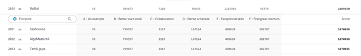

Unity Learn
Unity Learn is het officiële digitale leerplatform van Unity. Er zijn hier veel tutorials en voorbeeldprojecten te vinden om een makkelijke stap te zetten in de wereld van game development.
Ik had mezelf opgelegd, na mijn examens van het tweede jaar, wat nieuwe dingen te leren in de zomervakantie, want ik wou niet 2 maanden stilzitten. Unity was hier een perfecte kandidaat voor aangezien ik altijd al geïnteresseerd ben geweest in game development.
Initieel toen ik besliste om Unity te leren wist ik nog niet dat Unity Learn bestond. Ik dacht dat ik waarschijnlijk door via Youtube tutorials te volgen en de documentatie te lezen wel ergens zou geraken.
De mogelijkheden om te leren via Unity Learn zijn opgesplits in 5 delen: pathways, missies, cursussen, projecten en tutorials. Dit kan gaan over een breed topic waarin je geïnteresseerd bent, hiervoor zal je een pathway of cursus volgen, tot specifieke zaken die je nodig hebt tijdens het maken van een spel, in dit geval zal je een missie doen of tutorial volgen.
Als complete beginner ben ik dan logischerwijze gestart met de “Unity Essentials Pathway” waarin helemaal van nul begonnen word. Dan ben ik overgestapt naar de “Junior Programmer Pathway” waarin wordt uitgelegd hoe je de Unity editor installeert, hoe je beweegt in de editor en hoe ermee te werken. Er is een opsplitsing gemaakt in verschillende hoofdstukken die elk een project behandelen. Het eerste deel van een hoofdstuk is het maken van het project en in het tweede deel wordt je een ander project toegediend met enkele problemen. Het doel is dan deze te debuggen. Dit liet mij de eerder geziene concepten in het eerste deel beter begrijpen. Verder zijn er ook enkele projecten die je kan maken zoals een oneindige side-scroller en een arcadespel waar je punten verdient door de juiste dozen te slicen en de bommen te ontwijken.
Alle game art werd aangeboden en was heel eenvoudig om mee te werken. Ik moest mij dus nooit zorgen maken over assets te kopenof zelf iets te maken.
Natuurlijk ben ik in een week niet klaar om zelf een game te ontwikkelen, maar de basis is wel al gelegd wanneer ik hierop wil terugkomen. Ik heb wat kennis opgedaan over werken met animaties, states, controle van de speler, interageren met objecten, simpele UI voor menu en score, werken met 2D/3D audio, regelen van aanmaken en vernietigen van objecten ...
In februari 2022 ben ik nog eens hierop teruggekomen om mij voor te bereiden op de hackathon voor Sint-Oda. Hierin moest ook een spelletje gemaakt worden met Unity. Ik heb dan ongeveer een week genomen om mijn geheugen te verfrissen en wat verder te gaan in de pathways.
Het feit dat alles wat je op dit platform leert gamified is, was een zeer groot pluspunt voor mij. Voor ieder deel van een project dat je afrond krijg je experience en zie je traag je level stijgen. Bij het afsluiten van een cursus of pathway krijg je een badge die weergegeven wordt op je profiel. Dit geeft een zeer bevredigend gevoel en moedigt je aan om bij te blijven leren.
Nog een pluspunt van Unity Learn is de community die errond is gebouwd. Een heel actief forum waarin vragen over alles gerelateerd game development gesteld worden.
Unity zelf staat ook bekend voor hun uitstekende documentatie, hoewel dit niet direct iets te maken heeft met Unity Learn is het toch nuttig om dit te vermelden.
Er zijn tal van mogelijkheden en moest er toch iets niet zijn, is het altijd terug te vinden op Youtube of op Udemy.
Reflectie
Ik heb mezelf opgelegd om Unity te leren in de zomervakantie zodat ik toch iets deed in verband met ontwikkelen en niet zou stilzitten. Ik heb mij hier ook aan gehouden en heb ongeveer een week lang geleerd met Unity te werken.
Ik had in het begin wat problemen met het navigeren en bewegen in de editor, ik vond het niet heel intuïtief. Dit soort probleem is echter enkel op te lossen door er meer mee te werken en stilletjes aan verdween de klungeligheid ook en ging het wat vlotter.
Ik ben tevreden dat ik hier al iets mee heb gedaan en ik ben ook nog van plan ergens in de toekomst hierop terug te komen. Moest ik ervoor kiezen een andere game engine te gebruiken dan ga ik nog altijd voordelen halen omdat ik al wat kennis heb van enkele concepten in game development.
Naar mijn mening heb ik de basis redelijk snel opgepakt. Als ik zelf iets origineels zou maken zal ik waarschijnlijk wel wat problemen hebben omdat ik zou willen dat alles van de eerste keer er perfect uitziet. Werken met game art of eender wat artistieke vaardigheden vraagt is één van mijn zwakste kanten.
Dit heeft zeker geholpen in de opleiding met een hackathon waar ik later aan heb deelgenomen, hier was ik de enige in een team van 6 die al een beetje ervaring had. Ik denk ook dat dit de reden was dat ik mij meer comfortabel ben beginnen voelen met C#, wat veel heeft geholpen met het vak “Fullstack .NET” waarmee ik in het volgende semester ben gestart.
Ik wil deze activiteit uit laten blinken omdat ik met mijn kennis en vaardigheden die ik heb opgedaan uit mijn opleiding (programmeren, Unity gebruikt C#) iets heb gekozen waar ik zeer geïnteresseerd in ben en hierop heb kunnen bouwen. Met wat ik in 2 jaar geleerd heb op de PXL heb ik iets gelijkaardigs, maar toch in een branche die de opleiding niet verkent, kunnen verwezenlijken.
Google Hash Code 2022
Hash code is een internationale programmeercompetitie georganiseerd door Google. je neemt deel in teams van 2 tot 4 mensen. Het doel is het zo efficiënt mogelijk oplossen van een voorgesteld probleem door middel van een algoritme te creëren. Dit algoritme probeer je te optimaliseren om een zo hoog mogelijke score te behalen.
Ik heb mij samen met een vriend ingeschreven als een team van 2 voor Google Hash Code 2022. Er waren geen op voorhand overlegde taken die eender van ons zou vervullen. Mijn persoonlijke doel was beter te doen dan vorig jaar op vlak van rank.
Voor de start van de kwalificatierondes heb ik 5 dagen genomen om mij voor te bereiden op de competitie. Ik heb nog eens terug gekeken naar het probleem van vorig jaar en ook problemen van eerdere jaren bekeken. Hash Code houdt alle vorige competities bij in een archief zodat iedereen daarop kan oefenen.
Ik gebruik altijd Java als ik meedoe aan dit soort competities omdat ik me hier het meest in thuis voel, dus heb ik ook op voorhand al mijn klasse gemaakt met hierin het startpunt van de applicatie. Ik heb alles al klaargezet voor de input te lezen en te verwerken door over alle lijnen heen te gaan om onnodige tijd te verliezen wanneer we van start gaan.
Van het moment dat de tijd gestart is, hebben ik en mijn teamlid eerst de tijd genomen om de opgave grondig te lezen zodat we allebei op dezelfde hoogte waren. Met de gedachte in het hoofd dat we enkel 3 uur en 45 minuten hebben zijn we dan begonnen met te bedenken hoe we de input gaan verwerken zodat we alle data overzichtelijk hebben om hier ons algoritme op toe te passen.
Het probleem dat we gingen oplossen bestond uit het managen van een groep van ontwikkelaars, elk met hun eigen set van skills en een bepaalde vaardigheid in deze skills. Wij moeten op een zo efficiënt mogelijke manier ontwikkelaars toekennen aan een project uit een lijst van projecten. Een project heeft bepaalde skills van een bepaalde vaardigheid nodig en deze moet afgerond worden voor hun deadline. Ontwikkelaars kunnen uiteraard niet tegelijk aan meerdere projecten gezet worden en er is de mogelijkheid dat ze hun vaardigheden bevorderen.
Er was ook nog de mogelijkheid dat een ontwikkelaar de mentor was van een andere in een project, maar dit hebben we achterwege gelaten. We waren beide van de mening dat het probleem een stuk ingewikkelder was dan dat van vorig jaar en het heeft dan ook even geduurd voordat we een eerst werkend algoritme hadden dat ons een uitkomst gaf. Uiteraard was dit pas na enkele keren verkeerde output in te geven als antwoord of errors op te lossen dankzij debuggen.
Ons eerste resultaat was een zeer eenvoudige oplossing waar niet veel bij nagedacht was waar allemaal rekening mee gehouden moest worden. Op deze manier hadden we al iets en kon hierop verder gebouwd worden.
Iets voorbij de helft van onze tijd hadden we ons algoritme grotendeels af, hier en daar konden nog dingen getweakt worden, maar er was de veronderstelling dat veel beter dan dit niet ging lukken tenzij we een compleet ander algoritme zouden schrijven.
Vanaf hier heb ik nog wat kleine aanpassingen gemaakt en onze score wat verhoogt. Jammer genoeg was de snelheid van ons algoritme niet al te best en kon het bij de grotere input datasets een minuut of twee duren voor het programma door alle data heen was.
Uiteindelijk zijn we geëindigd op plaats 2855 van de 9031 deelnemende teams, wat een verbetering was van vorig jaar toen ik het alleen heb gedaan en op plaats 3706 ben beland.

Reflectie
Ik heb deelgenomen aan Google Hash Code 2022 met een team van 2 studenten. We hebben samengewerkt om een algoritme te schrijven voor een gegeven probleem.
Ik vond de opgave redelijk ingewikkeld dus heb ik ervoor gekozen er een deel van achterwege te laten en later als ik klaar zou zijn eventueel het weggelaten deel nog te implementeren.
Ik vind van mijzelf dat ik heel goed ben in de data voor te stellen in mijn hoofd en dit maakt het makkelijker om te weten wat er met mijn data gebeurt in iedere stap van mijn algoritme. Natuurlijk heb ik niets om deze vaardigheid mee te vergelijken dus weet ik niet of ik er wel degelijk goed in ben, maar het lijkt behoorlijk eenvoudig te zijn voor mij.
Het is jammer dat om zeer goed te presteren in Google Hash Code het veronderstelt is dat je wiskunde op een bepaald niveau zit. Mijn wiskundige achtergrond is gebrekkig, ik ben wel van plan hier iets aan te doen.
Iets wat ik misschien kan meenemen naar volgend jaar is dat het gehele team dezelfde taal gebruikt. Dit was op zich geen grote hinder, maar de hinder zou compleet weggewerkt kunnen worden als dit gebeurt. Ik gebruikte Java en mijn teamlid Python. We konden elkaars code wel lezen en begrijpen, maar de comfort zat voor ons anders.
Ik zie geen directe link met de opleiding, maar over het algemeen gaan deze competities over probleemoplossend denken en je code zo efficiënt mogelijk maken op vlak van snelheid en accuraatheid. Dit, uit zichzelf, is een belangrijk onderdeel van ontwikkelen en is iets wat wij in de opleiding ook worden aangeleerd.
Ik heb gekozen om deze activiteit wat verder te bespreken omdat competitive programming mij interesseert en ik ben trots op het feit dat alhoewel ik de opgave moeilijker vond dan het vorige jaar ik beter gepresteerd heb. Het geeft mij voldoening dat ik kan zien dat ik aan het groeien ben als ontwikkelaar.
Summerbuddy
Een “summerbuddy” is een student die al geslaagd is voor een bepaald opleidingsonderdeel en een andere student hier bijles over geeft in de zomervakantie om hun te helpen met hun herexamens.
Ik heb mij na mijn examens kandidaat gesteld om in de zomer bijles te geven voor het vak Java Essentials. Ik had hier zelf een goed punt op en was van de mening dat ik alle kennis nodig om bijles te geven bezat. Dit vond ik heel belangrijk, dat ik zeker wist dat er geen enkel hoofdstuk was waar ik naar mijn mening gebrekkige kennis over had.
13 juli ben ik goedgekeurd om bijles te geven en de dag erna heb ik meteen 2 tutees aan mij toegekend gekregen. Na op te merken dat ik niet langer toegang had tot de cursus op Blackboard heb ik mijn vorige lector hiervoor gevraagd zodat ik mij goed kon voorbereiden. Op voorhand hadden alle tutors een meeting bijgewoond om wat te verduidelijken wat van ons verwacht werd en welke documenten wij in orde moesten brengen.
Wij hadden de verantwoordelijkheid zelf contact op te nemen met de tutees en in te plannen welke onderwerpen aan bod zouden komen en wanneer. Ik heb ze beide via mail gecontacteerd met wat vragen en later ook op Microsoft Teams als herinnering om te antwoorden.
Ik stelde bijvoorbeeld vragen als: “Waar hebben jullie persoonlijk het meeste moeite mee?”, “Zijn er zwakke of sterke punten die jullie van jezelf weten?” en “Waren de punten globaal over alle programmeervakken wat minder of was het eerder een taalspecifiek probleem bij Java?”. Ook heb ik gevraagd wat hun punt was voor Java Essentials zodat ik een beter beeld kon schetsen van waar ze ongeveer zaten.
Op basis van de antwoorden heb ik beslist waar het meeste aandacht aan besteed zou worden en dan voorgesteld aan hun waarmee te beginnen. Als dit in orde was voor hun kon ik beginnen met de leerstof nog eens te overlopen en op te schrijven in grote lijnen wat ik in de volgende les zou bespreken. Ook heb ik extra oefeningen gekozen die op Blackboard stonden om als afsluiter op de les te maken en indien nodig voor te bereiden tegen volgende keer.
Een van de tutees heeft jammer genoeg afgehaakt voor het begin van de lessen en is gestopt met antwoorden op mail en Teams.
Er waren iedere tutorsessie ook een aantal documenten die moesten gemaakt of geüpdatet worden. Voor de start van een sessie moest je een nieuw voorbereidingsfiche maken met daarin wat je gaat behandelen die sessie en wat je hebt voorbereid. De (huidige) stand van de tutees en dingen die ik opmerk waar ikzelf op moet letten bij het geven van de bijles. Na de afloop van de bijles vulde ik dit document aan met de evaluatie van de student en wat ik denk dat hij/zij beter kan doen of wat hij/zij heel goed doet.
Voor iedere sessie moest ook na de afloop een screenshot gestuurd worden met bijvoorbeeld meeting in Teams, of als je fysiek bijles gaf een selfie als bewijs.
Het document “gepresteerde uren” vulde ik elke keer aan als ik een sessie had gehad zodat ik later mijn uren voor I-Talent kon opvragen voor de bijles.
In de laatste twee lessen hebben we de twee oefenexamens gemaakt die op Blackboard stonden aangezien hij aanhaalde deze zelf nog niet gemaakt te hebben. Na de laatste sessie had ik een goed gevoel over de kansen voor het slagen.
Over het algemeen viel het mij op dat de tutee wel begreep wat ik aan het uitleggen was en het erna ook meteen kon toepassen, maar de moeite erin zat zelf op het idee te komen om het op die manier te doen.
Reflectie
In de zomervakantie heb ik een student getutord om hem te helpen slagen voor zijn herexamen van het vak “Java Essentials”. We hebben 4 sessies gehouden waarin we grotendeels over alle leerstof zijn gegaan en wat oefeningen hebben gemaakt.
Het was jammer dat een van de tutees voor de eerste sessie al afgehaakt had zonder iets te laten weten. In zijn geheel vond ik het een goede ervaring, ik had de kans om les eens langs de andere kant te beleven.
Ik maakte me de eerste keer een beetje zorgen dat het ging voelen als een presentatie, maar dan 2 uur lang. Gelukkig was dit niet het geval.
Het was mij opgevallen dat ik soms in een monoloog viel tijdens het uitleggen en dat ik niet zorgde voor genoeg interactie. In volgende sessies heb ik dit opgelost door vaker vragen te stellen. Tijdens het uitleggen vroeg ik dan bijvoorbeeld voor bevestiging als het duidelijk was of vroeg ik de tutee of hij kon herformuleren wat ik juist had verteld. Ook heb ik mijn best moeten doen om zaken goed te formuleren, want op het begin legde ik soms dingen uit met de veronderstelling dat de tutee wist wat ik bedoelde.
Ik was goed voorbereid en ik ben heel trots op mezelf dat elke sessie voornamelijk vloeiend was. Ikzelf heb hier ook een voordeel uit gehaald, wanneer je iets moet uitleggen en zorgen dat iemand anders je begrijpt ben je zelf geforceerd om op een andere manier te denken over de leerstof.
Ik had aanvankelijk geen grootse verwachtingen, ik verwachtte dat ik gewoonweg wat zou helpen met de leerstof en dat het verder een redelijk neutraal gevoel zou achterlaten. Nochtans was ik aangenaam verrast, er was een zekere voldoening wanneer de tutee iets leek te begrepen wat hij eerder niet begreep.